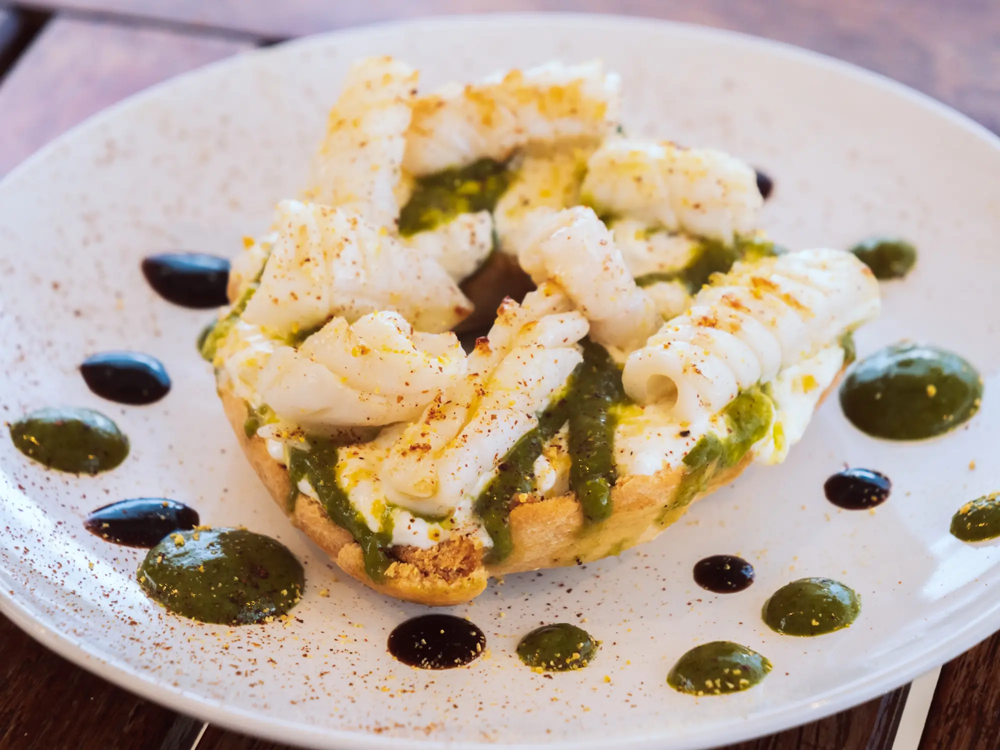
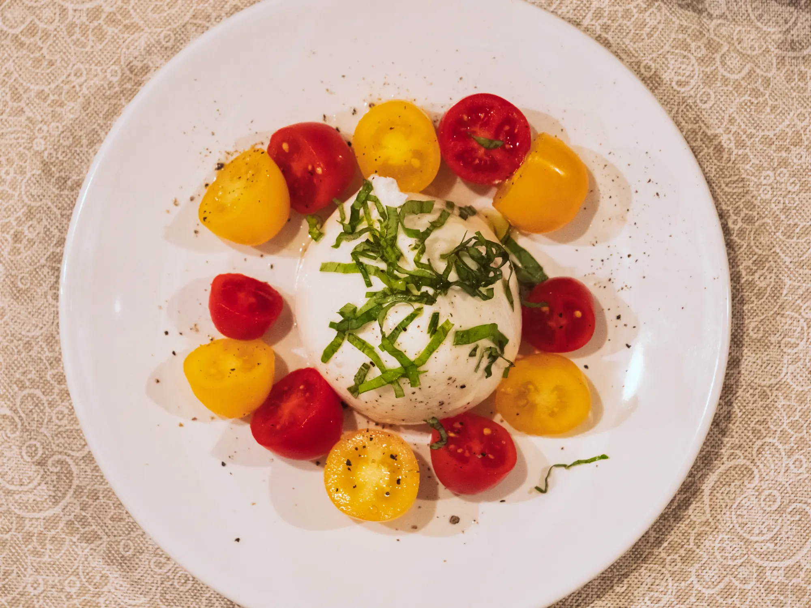
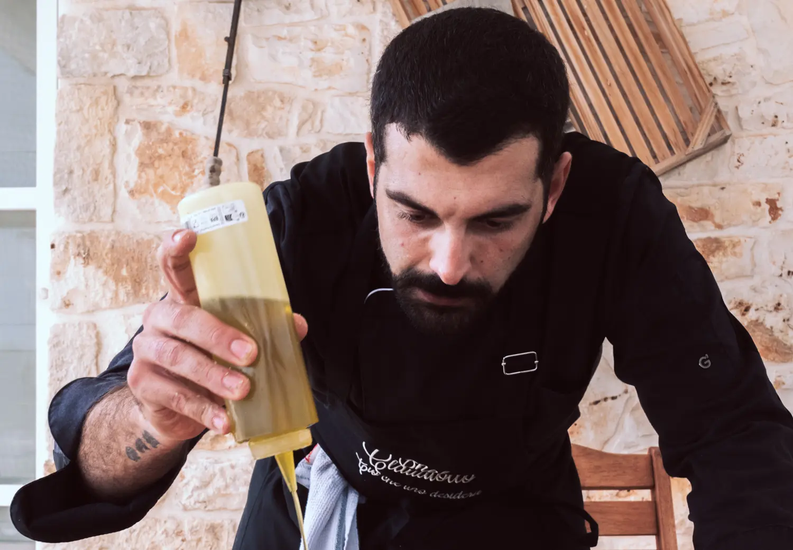
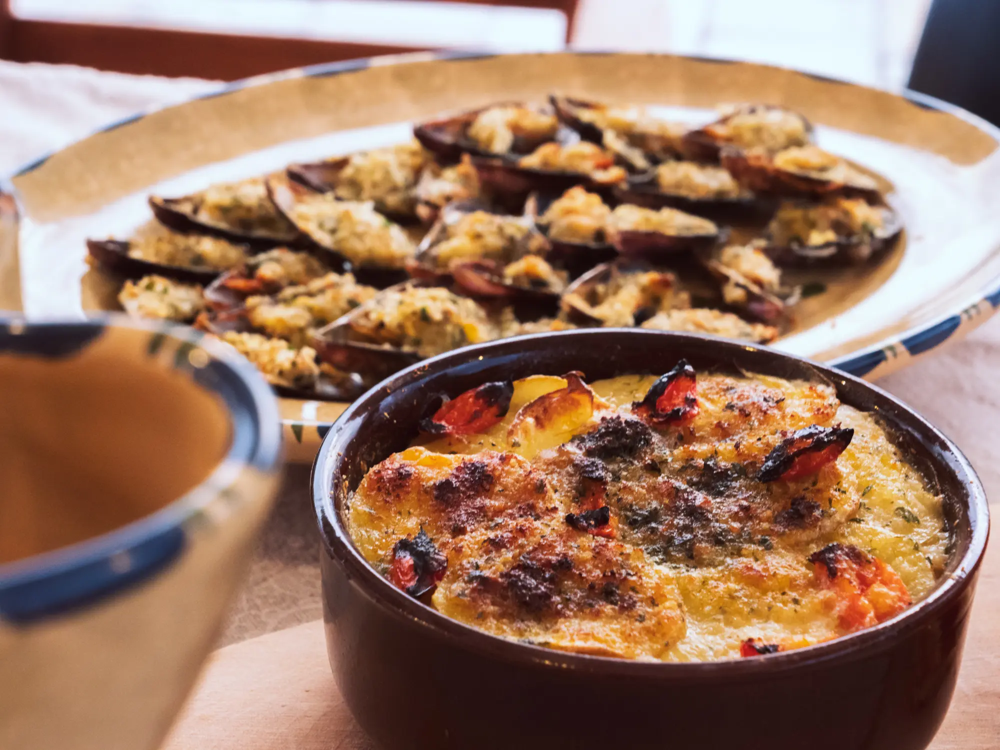

Taste Puglia’s Flavours
Indulge in the authentic flavours of Puglia with a unique, immersive dining experience.
Chef Claudio brings the essence of Puglian tradition directly to your table, using fresh, locally-sourced ingredients to create dishes that transform every meal into an unforgettable celebration of taste and culture.
Born and raised in Puglia, Chef Claudio has a deep-rooted passion for natural, wholesome food, and is eager to share his knowledge and culinary heritage with every guest.
Whether you’re visiting the region or simply seeking a memorable meal, his private chef services promise a dining experience that highlights the very best of Puglian cuisine.
Discover the Flavours of Puglia
Explore a curated selection of dishes that celebrate the vibrant ingredients and time-honoured recipes of our region.
Every creation crafted by Chef Claudio is infused with passion and expertise, bringing the authentic flavours of Puglia directly to your table.
Meet Chef Claudio
Chef Claudio, the culinary expert behind Puglia Flavours, established this project to bring the authentic tastes of his home region to the tables of food enthusiasts across the globe.
With extensive experience in the culinary arts, Chef Claudio specialises in providing a distinctive private chef service that celebrates the deep-rooted traditions of Puglian cooking.
His passion for sharing Puglia’s culinary heritage is at the heart of every dish, transforming each meal into a delightful exploration of flavour and tradition.
Our Mission
The aim of Puglia Flavours is to provide an authentic taste of Puglian cuisine straight to your doorstep, delivering a truly immersive culinary experience that includes both unique dishes and the fascinating stories behind their history and origins.
We are committed to sharing the distinctive tastes and rich traditions of Puglian food culture with guests from all over the world. Each meal becomes a sensory journey that envelops you in the region’s flavours, traditions, and heritage.
Our bespoke in-home chef services are meticulously tailored to your specific preferences, ensuring that every dish captures the true essence and spirit of Puglia.
